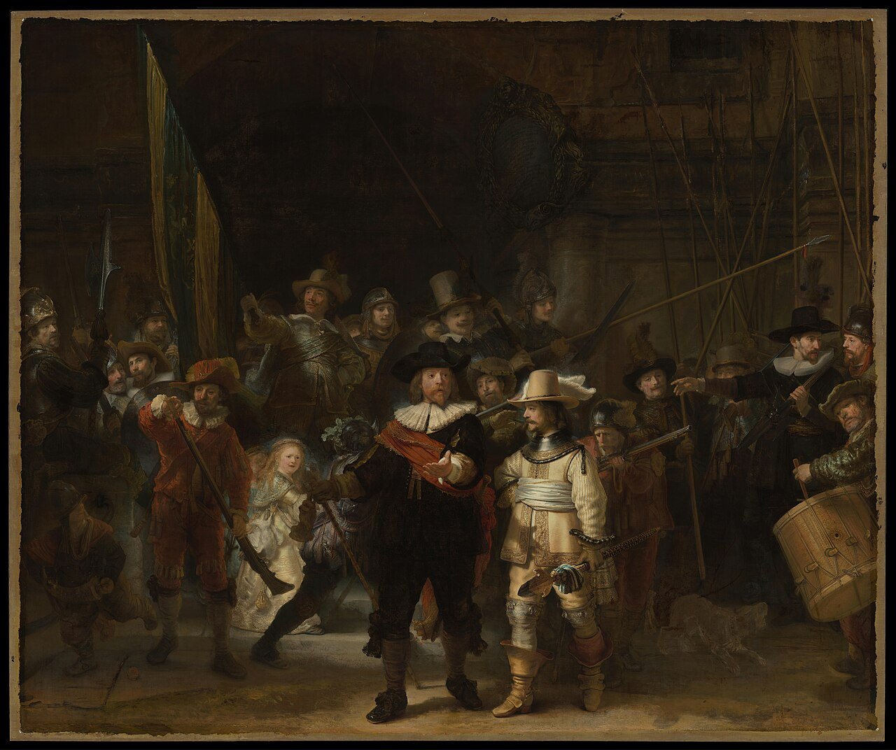
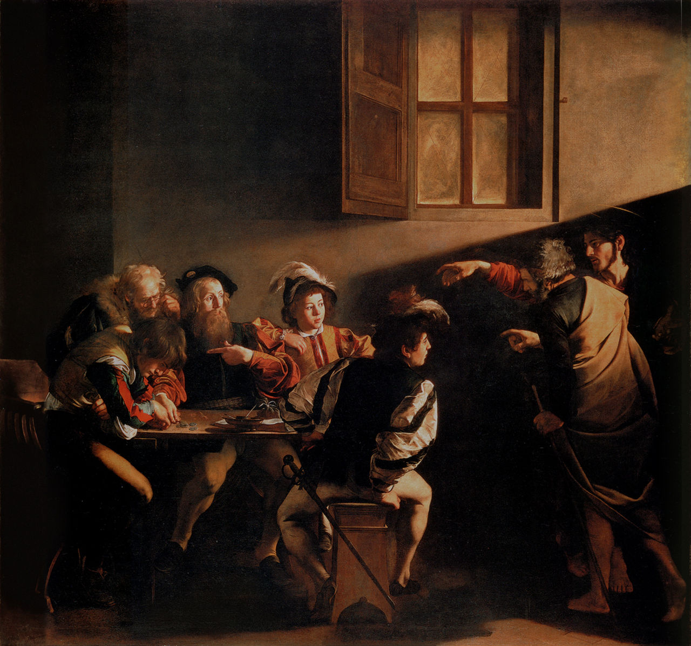
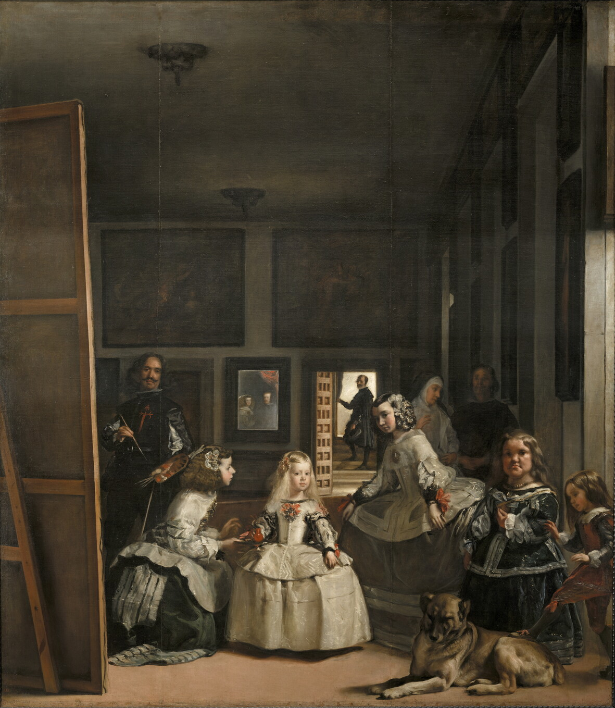
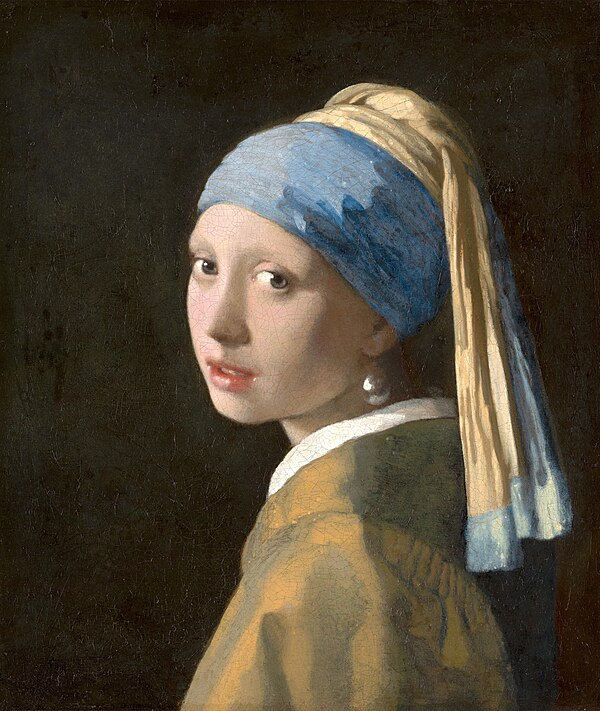
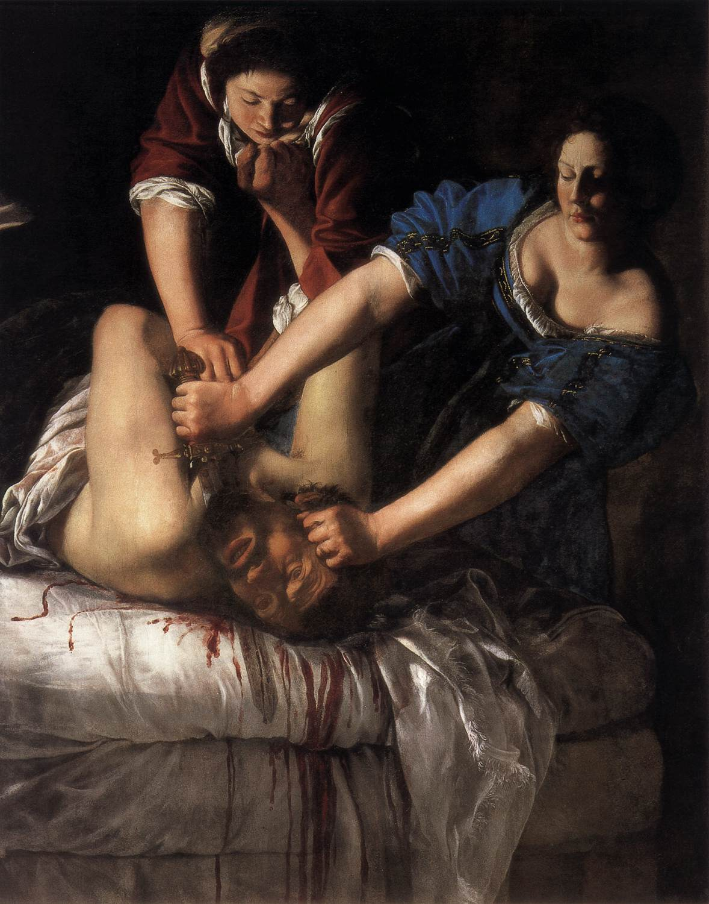
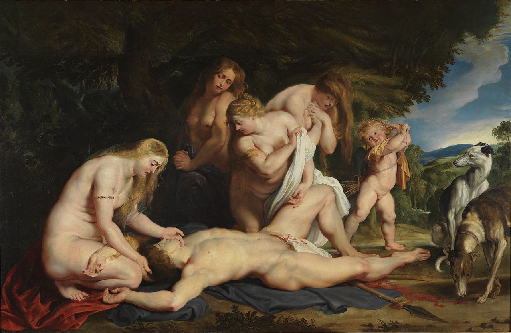
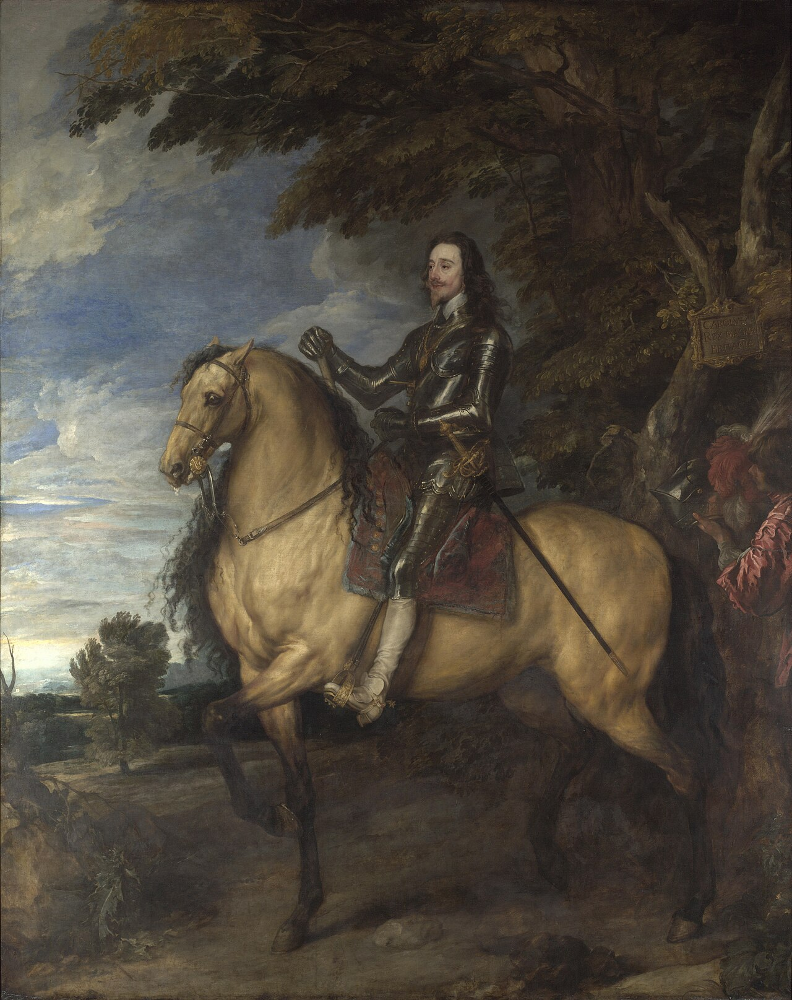
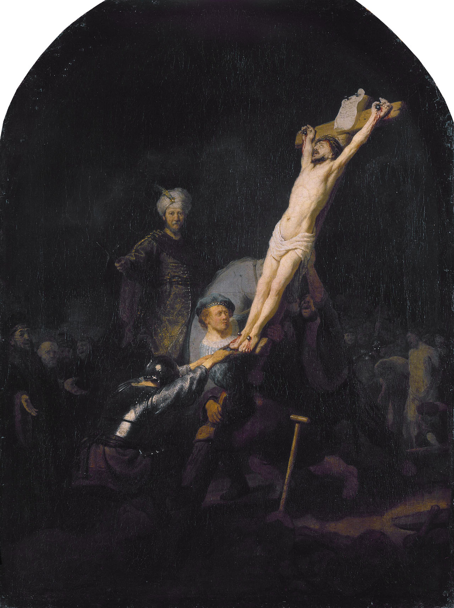
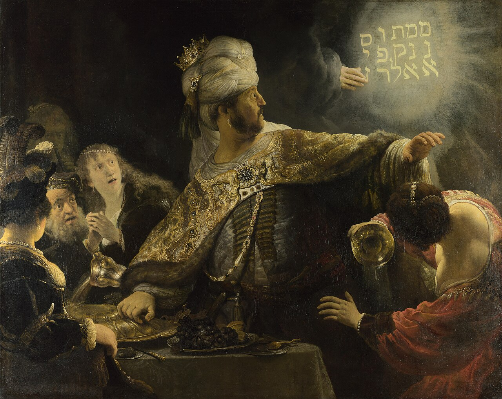

Meesterwerk: De Nachtwacht
Rembrandt van Rijn, 1642

⚜️ UITGEBREIDE STIJLFIGUREN
🎭 DRAMATISCHE LICHTCONTRASTEN (Chiaroscuro)
Tenebrisme: Extreme contrasten tussen licht en donker. Caravaggio's methode: een fel lichtbron uit het niets, alsof het een spotlight is in een donker theater.
Sfumato omgekeerd: Waar de Renaissance zachte overgangen had, heeft de Barok harde schaduwen. Het licht is een acteur in het drama.
💫 DYNAMISCHE COMPOSITIES
Diagonalen: Geen statische symmetrie, maar diagonale lijnen die beweging suggereren. Figuren die uit het beeld lijken te vallen of naar binnen stormen.
Theatraal: De compositie is als een toneelstuk - een moment van hoogste spanning wordt bevroren.
🎨 RIJKDOM & TEXTUUR
Weelderige details: Fluweel, zijde, goud, juwelen - elk oppervlak wordt uitgewerkt. De Barok viert materiële rijkdom als reflectie van goddelijke glorie.
Impasto: Dikke verflagen die licht vangen. Rembrandt's gouden licht is vaak fysiek reliëf op het doek.
😢 EMOTIONELE INTENSITEIT
Pathos: Het publiek moet VOELEN. Martelingen, extases, tranen - de Barok is emotioneel manipulatief (in de beste zin).
Intimiteit: Oogcontact met de kijker. De figuur kijkt je aan, trekt je het verhaal in.
📚 TIJDSGEEST CONTEXT (1600-1750)
🌍 POLITIEK PERSPECTIEF - De Contrareformatie, Absolute Monarchieën en Goddelijk Recht
De Barok ontstond in een Europa dat verscheurd was door religieuze oorlogen en politieke transformaties. De Protestantse Reformatie (begonnen met Luther's 95 stellingen in 1517) had het christendom gespleten, en de Katholieke Kerk reageerde met de Contrareformatie (1545-1648). Deze godsdienststrijd was niet alleen theologisch maar ook politiek - vorsten kozen zijdes, burgeroorlogen braken uit, en miljoenen mensen stierven. De kunst van de Barok werd het visuele wapen in deze strijd, gebruikt door zowel de Kerk als de monarchieën om macht te consolideren, gelovigen te overtuigen, en vijanden te imponeren.
De Contrareformatie en Kunst als Propaganda: Het Concilie van Trente (1545-1563) bepaalde dat religieuze kunst duidelijk, emotioneel overtuigend, en theologisch orthodox moest zijn. De Kerk verbood ambiguous, te humanistische, of "protestantse" kunst. Caravaggio's "De Roeping van Matteüs" (1599-1600) in de San Luigi dei Francesi in Rome voldeed perfect: het toonde een bijbels verhaal, maar in herkenbare 17e-eeuwse setting, met gewone mensen, dramatisch verlicht. De kijker (meest analfabeet) begreep direct: Christus roept ook jou, zelfs in je dagelijks leven. Dit was propaganda avant la lettre - kunst die de gelovige terugbracht naar de Katholieke Kerk. Gentileschi's "Judith onthoofdt Holofernes" (1620) met haar brute geweld kon worden gelezen als overwinning van de Kerk (Judith) over de ketterij (Holofernes). De martelaarschilderijen, de mystieke extases (Teresa van Ávila in Bernini's sculptuur), de verheerlijking van heiligen - allemaal dienden ze één doel: bewijzen dat de Katholieke Kerk de ware kerk was.
Absolute Monarchie en Divine Right: Terwijl de Kerk kunst gebruikte tegen het protestantisme, gebruikten de absolute monarchieën kunst om hun eigen macht te verheerlijken. Koning Lodewijk XIV van Frankrijk (1643-1715), de "Zonnekoning", bouwde het Paleis van Versailles als toneel van zijn goddelijke recht. Iedere kamer, ieder schilderij, ieder tuinontwerp diende om te herinneren: de koning reageert direct op God, niet op het volk. Van Dyck's "Karel I te Paard" (1637) toonde de Engelse koning als nobele, machtige heerser - ironisch, want Karel I zou in 1649 worden onthoofd tijdens de Engelse Burgeroorlog. Rubens' mythologische schilderijen als "Venus en Adonis" (1635) gediend in de koninklijke collecties om te demonstreren dat de vorsten erfgenamen waren van de klassieke helden. De overvloed, de pracht, de weelde - dit was politieke communicatie: wie zoveel rijkdom bezit, moet wel door God gezegend zijn.
De Dertigjarige Oorlog: De Dertigjarige Oorlog (1618-1648) verwoestte Midden-Europa. Wat begon als religieus conflict tussen katholieken en protestanten in het Heilig Roomse Rijk, escaleerde tot Europese oorlog waarin Zweden, Frankrijk, Spanje, en de Duitse staten meevochten. De bevolking van Duitsland daalde met 20-50% door gevechten, hongersnood, en ziektes. Rembrandt's "De Kruisoprichting" (1633) met zijn geweld, zijn lijden, zijn chaos weerspiegelde deze realiteit. De Nederlandse Republiek (waar Rembrandt woonde) was protestants en vocht voor onafhankelijkheid tegen het katholieke Spanje. Rembrandt's religieuze schilderijen waren individuele devotie, niet kerkelijke propaganda. "Het Feestmaal van Belsazar" (1635) waarschuwde tegen hoogmoed - relevant voor de Nederlandse kooplieden die rijk werden maar hun zedelijkheid niet mochten vergeten.
Kolonialisme en de Wereld-Economie: De Barok was de eerste wereldwijde kunststijl, verspreid door Europese koloniën in Amerika, Azië, en Afrika. Spaanse en Portugese missionarissen brachten Barok-kerken naar Mexico, Peru, de Filipijnen, en Goa. De rijkdom die deze kunst financierde kwam uit zilvermijnen (Potosí in Bolivia), plantages (suiker, tabak), en de trans-Atlantische slavenhandel. Rembrandt's "De Nachtwacht" (1642) toonde Amsterdamse kooplieden die rijk waren geworden door handel met Oost-Indië. Vermeer's "Het Meisje met de Parel" (1665) toonde een parel die waarschijnlijk uit de Perzische Golf of Amerika kwam. De rijkdom van de Barok was gebouwd op explootatie, slavernij, en kolonialisme - hoewel dit zelden direct werd afgebeeld.
De Republiek der Verenigde Nederlanden: De Nederlandse Republiek (1581-1795) was een uitzondering in het Europa van absolute monarchieën. Het was een republiek, geregeerd door kooplieden en regenten, niet door een koning. Dit weerspiegelde in de kunst: minder koninklijke propaganda, meer burgers met trots. Rembrandt's groepsportretten ("De Nachtwacht", maar ook de "Anatomieles van Dr. Tulp") toonden collectieve identiteit en individuele waardigheid. Vermeer's interieurs toonden het comfortabele leven van de Delftse middenklasse. Zonder kerkelijke of koninklijke opdrachtgevers ontwikkelden Nederlandse kunstenaars een marktgerichte kunst - ze schilderden wat particulieren wilden kopen. Dit was kapitalisme als kunstproduktie avant la lettre.
De Vrede van Westfalen (1648): De Vrede van Westfalen, die de Dertigjarige Oorlog en de Tachtigjarige Oorlog beëindigde, introduceerde het concept van staatssoevereiniteit en religieuze tolerantie (beperkt). Elk land mocht zijn eigen religie kiezen. Dit luidde het einde in van religieuze oorlogen in Europa (hoewel niet van oorlogen zelf). De kunst reageerde: na 1648 werd de Barok minder theologisch strijdend, meer esthetisch genot. Velázquez's "Las Meninas" (1656) ging niet over godsdienst maar over kijken, schilderen, representatie. De politiek was nog steeds aanwezig (het Spaanse hof), maar subtieler.
Esthetische Consequenties: De politieke context vertaalde zich direct in esthetische keuzes. De dramatische lichtcontrasteren (tenebrisme) van Caravaggio suggereerden goddelijke interventie in een donkere wereld - perfect voor de Contrareformatie. De dynamische composities weerspiegelden een wereld in beroering, niet de statische orde van de Renaissance. De emotionele intensiteit (martelaarschappen, extases) was pedagogisch: de kijker moest voelen, niet alleen denken. De overvloed (goud, fluweel, juwelen) toonde goddelijke zegening en aardse macht. Zelfs de schaal van Barok-architectuur (Bernini's colonnade voor de Sint-Pieter, Versailles' tuinen) was politieke communicatie: de Kerk en de Koning zijn groots, jij bent klein.
📖 LITERAIR PERSPECTIEF - Het Theater van de Wereld en de Poëzie van het Onuitsprekelijke
De literatuur van de Barok was, net als de schilderkunst, theatraal, emotioneel, en gericht op het overstijgen van het alledaagse. In een tijd van religieuze oorlogen en politieke omwentelingen zochten schrijvers naar nieuwe vormen om de complexiteit van de menselijke ervaring uit te drukken. Van Shakespeare's tragedies tot Cervantes' ironie, van Milton's epiek tot de Metaphysical poets' verfijning - de literatuur bood zowel een spiegel van de tijd als een venster naar het transcendente.
Shakespeare en de Menselijke Passie: William Shakespeare (1564-1616), werkend in het Elizabethaanse en Jacobijnse Londen, schreef toneelstukken die de menselijke passies in al hun complexiteit onderzochten. "Hamlet" (ca. 1600) met zijn aarzelende prins, zijn vragen over zijn en dood, zijn bekentenis "to be or not to be" - dit was Barok-filosofie in dialoogvorm. "King Lear" (ca. 1605) toonde een oude koning die zijn koninkrijk verdeelde en vervolgens zijn eigen dwaasheid en de wreedheid van zijn dochters ontdekte. De stormscène op de heide, met Lear gek geworden door verdriet, was pure Barok: de natuur weerspiegelde de innerlijke chaos. Rembrandt's latere werk, met zijn nadruk op menselijke zwakheid en vergankelijkheid, vertoonde overeenkomsten met Shakespeare's tragedies. Beiden toonden koningen als dwazen, helden als gebrekkige mensen, schoonheid als tijdelijk. "The Tempest" (1610-1611) met Prospero's magie, de geest Ariel, het monster Caliban - dit was barok theater: special effects, wonder, en moraal gemengd.
Cervantes en de Ironie van de Moderniteit: Miguel de Cervantes' "Don Quichot" (1605, 1615) werd de eerste moderne roman. Don Quichot, een oude man die te veel ridderromans had gelezen, trok erop uit om heldendaden te verrichten - maar de wereld was niet meer de middeleeuwse wereld van de romans. Hij viel windmolens aan (die hij voor reuzen aanzag), herbergen (die hij voor kastelen aanzag), schaapherders (die hij voor legers aanzag). Sancho Panza, zijn realistische schildknaap, probeerde hem tevergeefs te corrigeren. De ironie was barok: het idealisme (Don Quichot) botste met de realiteit (Sancho). Cervantes toonde dat de oude waarden (ridderlijkheid, eer, romantiek) niet meer pasten in de moderne wereld (handelskapitalisme, realpolitik, desillusie). Velázquez, die aan het Spaanse hof werkte waar Cervantes ook verbleef (ze kenden elkaar waarschijnlijk), schilderde dezelfde ironie in "Las Meninas" (1656): het hof was both grandioos en banaal, de koning was both almachtig en menselijk.
John Milton en het Epiek van het Verlies: John Milton's "Paradise Lost" (1667) was een episch gedicht dat het bijbelse verhaal van de zondeval vertelde vanuit meerdere perspectieven - God, Satan, Adam, Eva. Satan was de meest complexe karakter: trots, rebels, tragisch. "Better to reign in Hell than serve in Heaven" (Beter heersen in de hel dan dienen in de hemel) werd een van de beroemdste regels in de Engelse literatuur. Milton's Satan was Caravaggio's figuren: dramatisch verlicht, emotioneel intens, moreel ambiguous. Het gedicht was theodicee (rechtvaardiging van God) maar ook verkenning van vrije wil, gehoorzaamheid, en verleiding. Milton zelf was blind toen hij het dicteerde, een Bijbelse profeet in een moderne wereld. Rubens' mythologische schilderijen, zoals "Venus en Adonis" (1635), toonden dezelfde epiek: goden, helden, tragedies op grootse schaal.
De Metaphysical Poets en Verfijnde Beeldspraak: De Engelse Metaphysical poets (John Donne, George Herbert, Andrew Marvell) schreven poëzie die intellectueel complex, emotioneel intens, en vormelijk verfijnd was. John Donne's "Holy Sonnets" (ca. 1609-1610) bevatten de beroemde regel: "Batter my heart, three-person'd God" (Breek mijn hart, drie-enige God) - een violent gebed om bekering. De beeldspraak was fysiek, bijna gewelddadig, wat paste bij de Barok's nadruk op intensiteit. Donne's "A Valediction: Forbidding Mourning" vergeleek de liefde van twee geliefden met een kompas: "Thy soul, the fix'd foot, makes no show / To move, but doth, if th' other do." Deze verfijnde metaforen (conceits) waren literair equivalent van de gecompliceerde composities van Barok-schilderkunst. Rembrandt's latere etsen, met hun fijnheid en complexiteit, vertoonden overeenkomsten met deze poëzie.
Het Spaanse Theater (Calderón, Lope de Vega): De Spaanse Barok-theaters, met playwrights als Pedro Calderón de la Barca (1600-1681) en Lope de Vega (1562-1635), creëerden stukken die religieuze, filosofische, en sociale thema's vermengden. Calderón's "La vida es sueño" (1635, Het leven is een droom) vertelde van prins Segismundo die gevangen werd gehouden door zijn vader, koning Basilio, omdat een voorspelling zei dat Segismundo een tiran zou worden. Wanneer Segismundo kort wordt vrijgelaten en inderdaad gewelddadig handelt, wordt hij teruggevangen - en verteld dat zijn vrijheid een droom was. Het stuk vroeg: wat is werkelijkheid? Wat is droom? Is het leven zelf een droom? Deze filosofische vragen werden ook door Velázquez gesteld in "Las Meninas" (1656): wie was werkelijk, wie was geschilderd, wie was spiegelbeeld? Lope de Vega, die meer dan 1500 stukken schreef, creëerde het Spaanse nationale theater dat zowel vermaakte als moraliseerde.
De Franse Klassieke Tragedie: In Frankrijk ontwikkelde zich de klassieke tragedie, met playwrights als Pierre Corneille (1606-1684) en Jean Racine (1639-1699). Corneille's "Le Cid" (1637) vertelde het verhaal van Rodrigue en Chimène die verliefd waren maar wier vaders vijanden waren - Rodrigue moest Chimène's vader doden in een duel, en Chimène moest zijn moordenaar straffen. De tragedie was hoe liefde en eer botsten. Racine's "Phèdre" (1677) vertelde van Phèdre die verliefd was op haar stiefzoon Hippolyte, wat leidde tot leugens, dood, en wanhoop. Deze tragedies vertoonden overeenkomsten met Gentileschi's "Judith onthoofdt Holofernes" (1620): vrouwen gevangen in onmogelijke situaties, passie tegen plicht, geweld als oplossing. De Franse klassieke stijl (drie eenheden: tijd, plaats, actie) was meer gereguleerd dan de Italiaanse of Spaanse Barok, maar de emotionele intensiteit was vergelijkbaar.
De Barok-Embleemboeken: Een populair genre in de 17e eeuw was het embleemboek: boeken die afbeeldingen, motto's, en gedichten combineerden om morele lessen te onderwijzen. Jacob Cats' "Sinne- en Minnebeelden" (1618) in Nederland, met prenten van Adriaen van de Venne, toonde allegorische figuren met onderschriften die de kijker aanspoorden tot deugd. Deze embleemboeken waren literair-visuele hybrides: de afbeelding verduidelijkte het gedicht, het gedicht interpreteerde de afbeelding. Rembrandt, die veel prenten maakte, werkte in dezelfde traditie: zijn etsen van Bijbelse scènes gingen vaak vergezeld van tekst of werden door de kijker religieus geïnterpreteerd. De combinatie van beeld en woord was typisch Barok: beide media versterkten elkaar.
De Nederlandse Gouden Eeuw Literatuur: De Nederlandse Republiek kende een literaire bloei die parallel liep aan de schilderkunst. Joost van den Vondel (1587-1679), de "Nederlandse Shakespeare", schreef toneelstukken als "Gijsbrecht van Aemstel" (1638) en "Lucifer" (1654). "Lucifer" vertelde de val van de engel, net als Milton's "Paradise Lost" maar bijna 15 jaar eerder. De engelenrebellie, de trots van Lucifer, de val uit de hemel - dit was barok drama op zijn best. Vondel was katholiek (zeldzaam in protestants Amsterdam), en zijn religieuze thema's weerspiegelden de Contrareformatie-invloed. Gerbrand Adriaenszoon Bredero (1585-1618) schreef kluchten en liederen die het Amsterdamse volksleven beschreven - meer realistisch dan idealiserend. Pieter Corneliszoon Hooft (1581-1647) schreef historische werken en poëzie die de Nederlandse identiteit vormden. Deze literatuur bood woorden bij wat Rembrandt, Vermeer, en Frans Hals schilderden: een samenleving die rijk was, trots, en complex.
Conclusie: De literatuur van de Barok was, net als de schilderkunst, theatraal, emotioneel, en intellectueel complex. Van Shakespeare's tragedies tot Milton's epos, van Cervantes' ironie tot Vondel's Lucifer - de schrijvers van de 17e eeuw zochten nieuwe vormen om de menselijke ervaring uit te drukken in een tijd van verandering. Ze deelden met de schilders een fascinatie voor passies, voor vergankelijkheid, voor het spanningsveld tussen hemel en aarde. De literatuur bood taal, de kunst bood beeld, maar beiden streefden hetzelfde doel: het onuitsprekelijke uitspreken, het transcendente bereiken, de menselijke ziel blootleggen. Samen vormden ze de culturele expressie van een tijdperk dat niet alleen politiek en religieus, maar ook esthetisch revolutionair was.
🧠 PSYCHOLOGISCH PERSPECTIEF - Passies, Extases en het Individuele Zelf
De psychologie van de Barok was fundamenteel theatraal. Waar de Renaissance het menselijk portret had geïdealiseerd, toonde de Barok de mens als toneel van heftige passies: extase, angst, wanhoop, vervoering. De kunstenaars van de 17e eeuw begrepen iets wat moderne neurowetenschap zou bevestigen: de mens is niet primair een rationeel wezen maar een emotioneel wezen. Descartes scheidde denken en voelen, maar de Barok schilderde vooral het voelen.
De Theorie van de Passies: De 17e-eeuwse psychologie (voorafgaand aan Freud met drie eeuwen) classificeerde de menselijke passies: liefde, haat, verlangen, afkeer, vreugde, verdriet. De Franse filosoof René Descartes schreef "Les Passions de l'âme" (1649), waarin hij passies beschreef als fysiologische reacties die de ziel beïnvloedden. Deze theorie was ook artistieke methode: kunstenaars moesten passies kunnen uitbeelden. Caravaggio's "Het Avondmaal van Emmaüs" (1601) toonde verwondering (de discipel rechts met gespreide armen), herkenning (de discipel links die opstaat), en serene autoriteit (Christus). Elk gezicht was een studie in emotionele expressie. Gentileschi's "Judith onthoofdt Holofernes" (1620) toonde concentratie (Judith), vastberadenheid (de dienstmeid), en afschuw/verstarring (Holofernes). De psychologie was observatie: kunstenaars bestudeerden gezichtsuitdrukkingen, lichaamstaal, en handgebaren om passies geloofwaardig af te beelden.
Mystieke Extase en Religieuze Vervoering: De Barok was geobsedeerd door mystieke ervaringen - momenten waarop het individu de grens tussen zichzelf en God overstak. Teresa van Ávila's beschrijving van haar extase ("De pijn was zo hevig dat ik kreunde, maar zo zoet dat ik niet wilde dat het ophield") werd door Bernini in marmer gevangen: "De Extase van Teresa" (1652) toonde de non in moment van goddelijke vereniging, haar hoofd achterover, haar mond open, haar ogen gesloten. De engel met de speer was zowel pijnlijk als erotisch - de psychoanalyse zou later deze seksuele ondertoon expliciet maken, maar de 17e eeuw begreep het intuïtief. Caravaggio's "De Bekering van Paulus" (1601) toonde de apostel op de grond, armen gespreid, ogen gesloten - geveld door goddelijk licht. De extase was both powerful and vulnerable, a moment of total surrender.
Individuele Psychologie en het Portret: Rembrandt's zelfportretten (hij schilderde er meer dan 80 in zijn leven) waren psychologische zelfstudies. De jonge Rembrandt (1629) keek zelfverzekerd, bijna arrogant. De middelbare Rembrandt (1658) toonde een man die failliet was gegaan, wiens gezicht rimpels vertoonde, wiens ogen vermoeid waren. De late Rembrandt (1669, het jaar van zijn dood) toonde een oude man die de wereld had gezien en accepteerde. Dit was niet ijdelheid maar introspectie - kunst als psychologie. "De Nachtwacht" (1642) toonde niet alleen een groep schutters maar individuen: de jonge luitenant vol zelfvertrouwen, de oude sergeant berustend, de musketier geconcentreerd. Elk gezicht vertelde een verhaal. Vermeer's "Het Meisje met de Parel" (1665) met haar geopende mond, haar over-schouder blik, haar ongrijpbare uitdrukking - was ze aan het spreken? Was ze verrast? Was ze verlegen? De psychologie bleef mysterieus, wat het schilderij zo fascinerend maakte.
Martelaarschap en Lijden: De Barok's religieuze kunst toonde lijden in al zijn intensiteit. Christus aan het kruis, Sebastiaan doorpijld, Laurentius geroosterd, Agatha gemarteld - de kijker moest het fysieke geweld voelen. Caravaggio's "De Kruisafneming" (1602-1604) toonde het dode lichaam van Christus dat naar beneden zakte, de zwaartekracht voelbaar. Rembrandt's "De Kruisoprichting" (1633) toonde de fysieke inspanning van de mannen die het kruis ophieven, hun spieren gespannen, hun gezichten geconcentreerd. De psychologie was empathie: de kijker moest zich inleven in het lijden, medelijden voelen, en door dit gevoel tot geloof komen. De Contrareformatie begreep dat emotie effectiever was dan dogma.
Angst en het Sublieme: Edmund Burke's "A Philosophical Enquiry into the Origin of Our Ideas of the Sublime and Beautiful" (1757) zou later formuleren wat de Barok al wist: angst kon esthetisch genot opleveren. Het sublieme - dat wat ons tegelijkertijd aantrok en afstootte, verbijsterde en beangstigde - was de kern van veel Barok-kunst. Rembrandt's "Het Feestmaal van Belsazar" (1635) met de spookachtige hand die aan de muur schreef, toonde pure angst. De kijker voelde Belsazar's paniek. Caravaggio's "Judas kust Christus" (1602) toonde het moment van verraad, de soldaten die uit het donker opdoemden, de angst in Christus' ogen. Deze schilderijen werkten omdat ze de kijker confronteerden met eigen angsten: verraad, dood, goddelijk oordeel.
Vrouwelijke Psychologie: Artemisia Gentileschi (1593-1653) was een van de weinige vrouwelijke schilders van haar tijd, en haar werk toonde vrouwen anders dan mannen deden. Haar "Judith onthoofdt Holofernes" (1620) toonde twee vrouwen die samenwerkten, die niet aarzelden, die bloed aan hun handen kregen. Dit was geen fragiele vrouwelijkheid maar kracht, competentie, solidariteit. Gentileschi's eigen leven - ze was op 17-jarige leeftijd verkracht door haar leraar Agostino Tassi, en de rechtszaak die volgde was traumatisch - kleurde haar schilderijen. Judith die Holofernes doodde was persoonlijke catharsis, en ook een statement: vrouwen kunnen terugslaan. Vermeer's vrouwen ("Het Meisje met de Parel", "Vrouw met Weegschaal", "De Melkmeid") toonden een andere kant: contemplatie, rust, dagelijks leven. Maar ook hier was psychologie: de melkmeid schonk melk met concentratie, de vrouw bij het raam keek naar buiten met verlangen, het meisje met de parel keek over haar schouder met mysterie.
Blik en Intimiteit: De Barok gebruikte de blik als psychologisch instrument. Caravaggio's figuren keken vaak direct naar de kijker, braken de vierde wand, trokken de kijker het schilderij in. "De Roeping van Matteüs" (1599-1600): Matteüs wees naar zichzelf en keek vragend naar de kijker - "Ik?" Rembrandt's "De Joodse Bruid" (1665) toonde een paar dat niet naar de kijker keek maar naar elkaar, wat het schilderij intiemer maakte. Velázquez's "Las Meninas" (1656) was het meest complex: Velázquez keek naar ons (of naar de koning en koningin die achter ons stonden?), de infante keek naar haar ouders, de hofdames keken naar de infante. Wie keek naar wie? De psychologie van de blik werd filosofie.
Conclusie: De psychologie van de Barok was radicaal in haar nadruk op emotie boven rede, individu boven type, ervaring boven dogma. De kunstenaars van de 17e eeuw begrepen dat de menselijke psyche complex, tegenstrijdig, en diep was - en ze schilderden deze complexiteit. Van extase tot wanhoop, van zelfvertrouwen tot twijfel, van liefde tot moord - de Barok toonde de mens in al zijn emotionele volheid. Deze psychologische diepgang verklaart waarom Barok-kunst nog steeds zo direct spreekt: wij herkennen onszelf in deze gezichten, deze passies, deze blikken. De mens is in 400 jaar niet fundamenteel veranderd.
⚙️ HISTORISCH PERSPECTIEF
- De Wetenschappelijke Revolutie: Galileo, Kepler, Newton
- Telescopen en microscopen openen nieuwe werelden
- De ontdekking van het bloedsomloop (Harvey, 1628)
- Koloniale expansie: Amerika, Azië, Afrika
- Goud en zilver stromen binnen
- De trans-Atlantische slavenhandel bloeit
- De pest (1630, 1656) blijft toeslaan
🎭 FILOSOFISCH PERSPECTIEF - Rede, Mystiek en de Crisis van het Wereldbeeld
De Barok was een tijd van filosofische revolutie. De Wetenschappelijke Revolutie (Copernicus, Galileo, Kepler, Newton) had het middeleeuwse wereldbeeld vernietigd: de aarde was niet het centrum van het universum, de hemel was niet een vaste koepel, en God's ingrijpen was niet langer nodig om de planeten te verklaren. Tegelijkertijd bleef het geloof dominant, en filosofen probeerden rede en religie te verzoenen. Deze spanning tussen oude en nieuwe wereldbeelden, tussen geloof en wetenschap, tussen rede en passie, werd de intellectuele motor van de Barok.
Descartes en het Rationalisme: René Descartes (1596-1650), vader van de moderne filosofie, publiceerde zijn "Discours de la méthode" (1637) met het beroemde "Cogito ergo sum" (ik denk, dus ik besta). Descartes scheidde geest (res cogitans) en lichaam (res extensa) - een dualisme dat de westerse filosofie eeuwen zou domineren. Deze scheiding weerspiegelde in de kunst: Rembrandt's portretten toonden niet alleen fysieke gelijkenis maar psychologische diepgang - de geest achter het gezicht. "De Nachtwacht" (1642) met zijn individuele gezichten toonde dat elke burger een "cogito" had, een bewustzijn, een ik. Descartes' methode - twijfel alles, begin met zekerheid - was zelf een barokke beweging: destructie gevolgd door reconstructie, chaos gevolgd door orde. Zijn mechanistische wereldbeeld (de natuur als machine) stond echter in contrast met de Barok's nadruk op emotie, mysterie, en het onmeetbare.
Spinoza en het Pantheïsme: Baruch Spinoza (1632-1677), in Amsterdam geboren uit Portugees-Joodse immigranten, ontwikkelde een filosofie die Descartes' dualisme verwierp. Spinoza stelde dat er maar één substantie bestond: God OF Natuur (Deus sive Natura). Alles was modus van deze ene substantie. God was niet transcendent (boven de wereld) maar immanent (in de wereld). Dit pantheïsme werd als ketterij gezien, en Spinoza werd uit de Joodse gemeenschap verbannen. Zijn "Ethica" (postuum gepubliceerd in 1677) stelde dat de mens geluk kon vinden door zijn plaats te begrijpen in de noodzakelijke orde van de natuur. Dit was filosofie als esthetiek: de wereld zien zoals hij is, en daar schoonheid in vinden. Rembrandt, die in dezelfde Amsterdamse kringen verkeerde als Spinoza, schilderde het gewone (oude mannen, slagerijen, landschappen) met eerbied - alsof elk object goddelijk was.
Mystiek en de Ervaring van het Goddelijke: Terwijl rationalisten als Descartes en Spinoza probeerden God te begrijpen, zochten mystici als Teresa van Ávila (1515-1582) en Johannes van het Kruis (1542-1591) God te ervaren. Teresa's "Innerlijke Kasteel" (1577) beschreef de ziel als kasteel met zeven woningen, waar de mysticus doorheen reisde naar de binnenste kamer waar God woonde. Haar extatische ervaringen (visioenen, levitaties, stigmata) werden door Gian Lorenzo Bernini in 1652 verbeeld in "De Extase van Teresa" - een sculptuur die tegelijkertijd spiritueel en sensueel was, een non die in extase lag terwijl een engel met een speer haar hart doorboorde. De Barok viert deze mystiek: het goddelijke is niet rationeel maar emotioneel, niet begrepen maar gevoeld. Caravaggio's "De Roeping van Matteüs" (1599-1600) toonde niet een rationele bekering maar een plotselinge, onverklaarbare roeping - genade als bliksemschicht.
De Wetenschappelijke Revolutie: Galileo Galilei (1564-1642) verdedigde het heliocentrische wereldbeeld van Copernicus en werd in 1633 door de Inquisitie veroordeeld tot huisarrest. Johannes Kepler (1571-1630) beschreef de planeetbanen als ellipsen, niet cirkels. Isaac Newton (1643-1727) ontwikkelde de zwaartekrachtswet en toonde dat dezelfde wetten golden op aarde en in de hemel. Deze wetenschappelijke vooruitgang veranderde hoe kunstenaars naar de wereld keken. Rembrandt's "De Anatomieles van Dr. Tulp" (1632) toonde wetenschappelijke nieuwsgierigheid - het menselijk lichaam openleggen om te begrijpen. Vermeer's gebruik van de camera obscura (een optisch instrument) om perspectief en licht te bestuderen weerspiegelde wetenschappelijke methode. De telescopen die in de 17e eeuw werden uitgevonden, werden niet alleen gebruikt voor astronomie maar ook geschilderd (Vermeer's "De Astronoom", 1668). De wereld was meetbaar geworden, en kunst kon deelname aan deze meting.
Vergankelijkheid en Vanitas: De Barok was geobsedeerd door vergankelijkheid. In een tijd van pest, oorlog, en godsdienststrijd, was de dood altijd nabij. De vanitas-schilderkunst (schedels, uurwerken, verwelkte bloemen) herinnerde de kijker: "memento mori" (gedenk te sterven). Rembrandt's latere zelfportretten toonden een ouder wordende man, rimpelig, vermoeid - geen idealisatie maar waarheid. "Het Feestmaal van Belsazar" (1635) waarschuwde: rijkdom is tijdelijk, God's oordeel is eeuwig. Deze filosofie was stoïcijns: aanvaard de vergankelijkheid, leef waardig. Het was ook christelijk: deze wereld is voorbijgaand, de volgende wereld is permanent. De Barok's dramatiek - de extreem contrasten, de constante beweging - was een poging om het vergankelijke moment te verheffen tot eeuwigheid.
Het Theatrum Mundi: De metafoor van de wereld als theater (theatrum mundi) was Barok. Shakespeare's "As You Like It" (1599) begon: "All the world's a stage, and all the men and women merely players." Calderón de la Barca's "La vida es sueño" (1635) stelde dat het leven een droom was. Velázquez's "Las Meninas" (1656) was zelf een theaterscène: wie keek naar wie? Wie was acteur, wie publiek? De compositie vroeg filosofische vragen over representatie, werkelijkheid, en schijn. Deze metafoor had theologische implicaties: God was de regisseur, wij waren de spelers, en het script was voorbestemd (predestinatie in het calvinisme) of vrije wil (in het katholicisme). De kunstenaar als schepper van werelden werd een kleinere God.
Esthetische Consequenties: De filosofische context vertaalde zich in esthetische keuzes. Het tenebrisme (extreme lichtcontrasten) weerspiegelde de spanning tussen geloof (licht) en duisternis (ongeloof, twijfel). De dramatische composities met hun diagonale lijnen en beweging weerspiegelde een universum in beweging, niet statisch. De nadruk op individuele psychologie (Rembrandt's portretten, Vermeer's "Het Meisje met de Parel") weerspiegelde Descartes' cogito - het individuele bewustzijn als centrum. De mystieke extases (Bernini's Teresa, Caravaggio's bekeringen) weerspiegelde de ervaring boven de rede. Zelfs de overvloed van detail (fluweel, goud, juwelen) kon als filosofisch statement worden gelezen: de wereld was rijk, gelaagd, complex - niet eenvoudig, niet minimalistisch.
🎨 TIEN MEESTERWERKEN - GEDETAILLEERDE ANALYSE
1. "De Nachtwacht" (1642) — Rembrandt van Rijn
Rijksmuseum, Amsterdam · 363 × 437 cm · Olieverf op doek
Achtergrond: Groepsportret van de Amsterdamse schutterij (burgerwacht). De officieren betalen elk voor hun plek in het schilderij. Rembrandt breekt met de traditie van statische rijtjes - hij maakt er een actie-scène van.
🔍 STIJLANALYSE
Dynamische compositie: Geen rij, maar een beweging. De luitenant geeft bevel, de musketiers laden. Het is een moment van actie, niet een pose. Diagonale lijnen creëren diepte en spanning.
Chiaroscuro: Het meisje met het kippenpootje (het witte laken) is een lichtbaken in het midden. Rembrandt gebruikt licht om het oog te leiden: naar de officieren, naar het meisje, naar de handen die bewegen.
Psychologische diepgang: Elk gezicht is individueel. De jonge officier (Frans Banning Cocq) kijkt zelfverzekerd. De andere figuren hebben eigen persoonlijkheden - dit zijn geen types, maar mensen.
De "nacht": Het schilderij werd later donkerder door vernis, maar was oorspronkelijk daglicht. De schaduw is Rembrandt's keuze - dramatiek boven documentatie.
2. "De Roeping van Matteüs" (1599-1600) — Caravaggio
San Luigi dei Francesi, Rome · 322 × 340 cm · Olieverf op doek

Achtergrond: Caravaggio's doorbraak. Jezus roept Matteüs (een tollenaar) om hem als apostel te volgen. Het tafereel speelt in een 17e-eeuwse herberg - Caravaggio schildert het heilige in het alledaagse.
🔍 STIJLANALYSE
Tenebrisme: Caravaggio's handelsmerk - het licht komt uit het niets, een soort goddelijke spotlight. De rest is duisternis. Dit creëert theater én spiritualiteit.
Realisme: De figuren zijn geen idealen maar echte mensen - met vieze handen, versleten kleding, lelijke gezichten. Caravaggio gebruikte straatmodellen.
Het moment: Matteüs wijst naar zichzelf: "Ik?" De hand van Jezus (links) lijkt op de hand van God in Michelangelo's "Schepping van Adam" - Caravaggio citeert de Renaissance.
Compositie: Diagonale tafel scheidt de wereld van het geld (rechts) van de wereld van het spirituele (links). Maar de lichtstraal overlapt - genade is mogelijk.
3. "Las Meninas" (1656) — Diego Velázquez
Museo del Prado, Madrid · 318 × 276 cm · Olieverf op doek

Achtergrond: Het "schilderij van schilderijen". Velázquez schildert zichzelf terwijl hij het koninklijk gezin portretteert. Maar de koning en koningin zijn alleen zichtbaar in de spiegel.
🔍 STIJLANALYSE
Spel van blikken: De infante kijkt naar haar ouders. De hofdames kijken naar de infante. Velázquez kijkt naar ons (of naar de koning en koningin achter ons?). Wie is het onderwerp?
Meta-kunst: Velázquez schildert het schilderen. Het doek waar hij aan werkt is naar ons toegekeerd - we zien de achterkant. Wat schildert hij?
Loose penseelvoering: Van dichtbij zijn het alleen maar vlekken. Pas van veraf worden het gezichten. Velázquez was hierin vooruit op de Impressionisten.
4. "Het Meisje met de Parel" (1665) — Johannes Vermeer
Mauritshuis, Den Haag · 44 × 39 cm · Olieverf op doek

Achtergrond: Vermeer's meest bekende werk, vaak de "Mona Lisa van het Noorden" genoemd. Het is geen portret maar een "tronie" - een studie van een uitdrukking.
🔍 STIJLANALYSE
Licht: Het zachte, diffuse licht dat van links komt is typisch Vermeer. Het gezicht gloeit tegen de donkere achtergrond.
De blik: Het meisje kijkt over haar schouder, alsof we haar hebben verrast. Haar mond staat een beetje open - is ze aan het spreken? De intimiteit is bijna ongemakkelijk.
De parel: Een enkele veeg wit met een reflectie. Het is een abstractie van een parel - Vermeer suggereert meer dan hij toont.
5. "Het Avondmaal van Emmaüs" (1601) — Caravaggio
National Gallery, Londen · 141 × 196 cm · Olieverf op doek

Achtergrond: Het bijbelse verhaal waarin de verrezen Christus zich aan twee discipelen openbaart tijdens het avondmaal. Het moment van herkenning is Caravaggio's onderwerp.
🔍 STIJLANALYSE
Tenebrisme: Caravaggio's meest dramatische licht. Christus is het lichtbron - zijn witte hemd gloeit. De discipelen zijn half in schaduw.
Het moment: De discipel links steunt zijn handen op de tafel (da Vinci's "Laatste Avondmaal" wordt geciteerd). De discipel rechts spreidt zijn armen - verwondering, erkenning, aanbidding in één gebaar.
Realisme: De handen zijn vuil, de kleren zijn armoedig. Dit zijn werkmannen die Christus ontmoeten. Caravaggio maakt het heilige aards.
6. "Judith onthoofdt Holofernes" (1620) — Artemisia Gentileschi
Uffizi, Florence · 147 × 108 cm · Olieverf op doek

Achtergrond: Het bijbelse verhaal van Judith die de Assyrische generaal vermoordt. Gentileschi's versie is de meest brutale - en persoonlijkst. Zij was zelf slachtoffer van verkrachting.
🔍 STIJLANALYSE
Geweld: Dit is geen elegante onthoofding. Judith worstelt, haar armen verenken, het bloed spuit. Het is fysiek, wreed, echt.
Vrouwelijke kracht: Judith is geen fragiele schoonheid maar een sterke vrouw die haar werk doet. Vrouwen helpen elkaar - mannen zijn overbodig.
Zelfportret?: Judith lijkt op Gentileschi zelf. Holofernes lijkt op Agostino Tassi, haar verkrachter. Dit is persoonlijke catharsis.
7. "Venus en Adonis" (1635) — Peter Paul Rubens
Metropolitan Museum, New York · 197 × 243 cm · Olieverf op doek

Achtergrond: Het mythische verhaal van Venus die haar geliefde Adonis probeert tegen te houden om op jacht te gaan (waar hij zal sterven).
🔍 STIJLANALYSE
Rubensiaanse vrouwen: Venus is vol, zacht, vlezig. Dit is Rubens' ideaal van schoonheid - overvloed en vruchtbaarheid. Haar huid is porselein.
Beweging: Venus klampt zich vast aan Adonis die weg wil. De honden trekken aan de lijn. Cupido slaapt. Alles is in beweging, spanning, dramatiek.
Kleur: Warm roze en wit (Venus' huid), donker rood en bruin (Adonis en de jacht). Het contrast tussen liefde (licht) en dood (donker).
8. "Karel I te Paard" (1637) — Anthony van Dyck
National Gallery, Londen · 123 × 85 cm · Olieverf op doek

Achtergrond: Karel I van Engeland, geschilderd door zijn hof-schilder. Dit is propaganda - de koning als nobele heerser. Karel zou later worden onthoofd tijdens de Engelse Burgeroorlog.
🔍 STIJLANALYSE
Machtsbeeld: De koning kijkt neer op ons (letterlijk en figuurlijk). Het paard is sterk, gehoorzaam, symboliseert de natuur die de koning beheerst.
Van Dyck's elegantie: De koning draagt mode - een losse, informele jas die zijn aristocratische nonchalance suggereert.
Ironie: Karel I regeerde uiteindelijk zo slecht dat hij werd onthoofd. Dit schilderij toont de glorie die was, niet de tragedie die zou komen.
9. "De Kruisoprichting" (1633) — Rembrandt van Rijn
Alte Pinakothek, München · 95 × 73 cm · Olieverf op doek

Achtergrond: Een van Rembrandt's vroegste werken, geschilderd toen hij 26 was. Het toont het moment dat Christus aan het kruis wordt genageld.
🔍 STIJLANALYSE
Dynamiek: Het kruis wordt opgetild door een groep mannen. De spieren spannen, de touwen knappen, het hout piept. Rembrandt schildert fysieke inspanning.
Christus: Het licht valt op Christus' lichaam - het enige moment van stilte in de chaos. Zijn gezicht is vredig terwijl alles om hem heen woedt.
Schuld: De man op de voorgrond (mogelijk een zelfportret van Rembrandt) kijkt naar de kijker. Hij is medeplichtig. De toeschouwer wordt betrokken bij het geweld.
10. "Het Feestmaal van Belsazar" (1635) — Rembrandt van Rijn
National Gallery, Londen · 168 × 209 cm · Olieverf op doek

Achtergrond: Het bijbelse verhaal van koning Belsazar die het heilige gerei uit de tempel van Jeruzalem gebruikt voor een feestmaal. Een hand verschijnt en schrijft aan de muur.
🔍 STIJLANALYSE
Het moment: Belsazar schrikt, zijn gasten deinzen terug, de hand gloeit. Het is het exacte moment van goddelijke interventie. Rembrandt bevriest de afschuw.
Licht: De hand is het lichtbron - bovennatuurlijk, angstaanjagend. De gouden bekers reflecteren het licht. Rijkdom kan je niet redden van het oordeel.
Moraal: De Nederlandse Republiek was protestants - dit is een waarschuwing tegen hoogmoed. God ziet alles, ook in je privé-feestjes.
📚 CONCLUSIE: DE THEATER VAN HET GELOOF
De Barok leert ons:
- Dat kunst emotie kan programmeren: Het licht, de kleur, de compositie - alles dient om ons te raken
- Dat heilig en alledaags samengaan: Caravaggio's heiligen zijn straatvolk
- Dat vrouwen krachtig zijn: Gentileschi's Judith is wraak én gerechtigheid
- Dat kunst filosofie is: Velázquez vraagt "wat is zien?"
- Dat rijkdom vergankelijk is: Belsazar's feest eindigt in angst
De Barok is theater - en wij zijn het publiek.